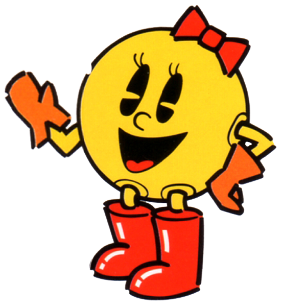
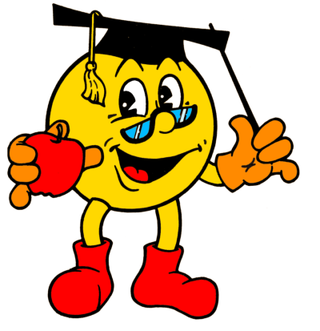
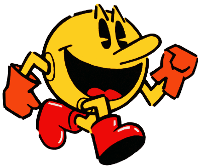
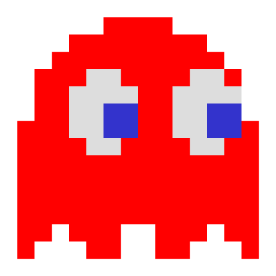
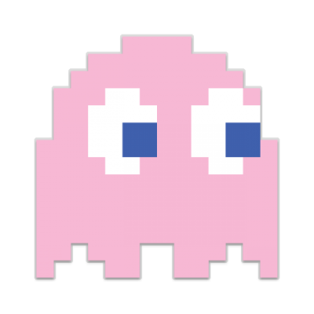
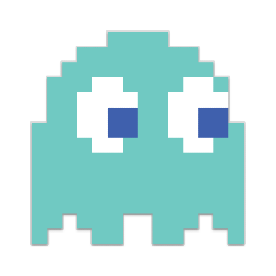
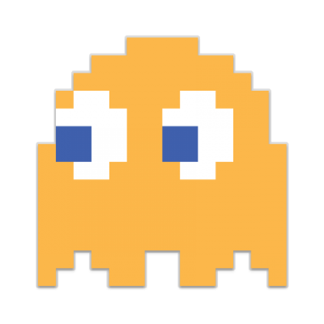

Pac Man (パックマン Pakku Man?) es un videojuego arcade creado por el diseñador de videojuegos Toru Iwatani de la empresa Namco, y distribuido por Midway Games al mercado estadounidense a principios de los años 1980.
Desde que Pac-Man fue lanzado el 22 de mayo de 1980, fue un éxito. Se convirtió en un fenómeno mundial en la industria de los videojuegos, llegó a tener el récord Guiness del videojuego de arcade más exitoso de todos los tiempos con un total de 293 822 máquinas vendidas desde 1981 hasta 1987 y acabó con el dominio de Space Invaders, donde la acción predominante era shoot 'em up (disparar a todos) para reemplazarla por un formato único, más humorístico y poco violento que gustó a muchísimas personas. "Todos los juegos que estaban disponibles en ese entonces -fines de los 70- eran de tipo violento, de guerra o como el Space Invaders", recordó en una entrevista Iwatani, agregando que "no había juegos que todos pudieran disfrutar, y especialmente no había ninguno para mujeres. Quería hacer un juego 'cómico' que las mujeres pudiesen disfrutar".
El nombre del juego proviene de la onomatopeya japonesa paku (パク?), sonido que se produce al abrir y cerrar la boca. El nombre se romanizó como Puck-Man en Japón (en inglés, puck se pronuncia pac en español). Sin embargo, Midway lo modificó a Pac-Man para el mercado estadounidense (y posteriormente otros mercados occidentales) debido a que la gente podría vandalizar la «P» de Puck-Man pintando encima una «F», formando una grosería en inglés.
En España, este juego era coloquialmente conocido como Comecocos debido a que se anunciaba de esta manera en televisión la versión para Atari 2600 a principios de los años 1980 aunque su nombre oficial seguía siendo Pac-Man. Se popularizó tanto entre la población española que la empresa MB tituló de esta manera la versión española de su juego de mesa basado en Pac-Man.
El protagonista del videojuego Pac-Man es un círculo amarillo al que le falta un sector, por lo que parece tener boca. Aparece en laberintos donde debe comer puntos pequeños (llamados «Pac-dots» en inglés), puntos mayores y otros premios con forma de frutas y otros objetos. El objetivo del personaje es comer todos los puntos de la pantalla, momento en el que se pasa al siguiente nivel o pantalla. Sin embargo, cuatro fantasmas o monstruos, Shadow (Blinky), Speedy (Pinky), Bashful (Inky) y Pokey (Clyde), recorren el laberinto para intentar capturar a Pac-Man. Estos fantasmas son, respectivamente, de colores rojo, rosa, cian y naranja. En el juego original (Puck-Man), los fantasmas se llamaban Akabei, Pinky, Aosuke y Guzuta. Los fantasmas no son iguales, así mientras Blinky es muy rápido, y tiene la habilidad de encontrar a Pac-Man en el escenario, Inky es muy lento y muchas veces evitará el encuentro con Pac-Man.
Hay un «pasillo» a los costados del laberinto que permiten a Pac- Man o sus enemigos transportarse al costado opuesto (sale por la derecha y reingresa por la izquierda, o viceversa). Cuatro puntos más grandes de lo normal situados cerca de las esquinas del laberinto nombrados en inglés Power Pellets (que en español lo han traducido en diversas formas como «píldoras mágicas» o «de poder», «bolas de energía» o simplemente «punto de poder»), proporcionan a Pac-Man, durante un tiempo limitado, la habilidad de comerse él a los monstruos (todos ellos se vuelven azules mientras Pac-Man tiene esa habilidad), tras lo cual todo vuelve a ser como al principio.
Después de haber sido «comidos» por Pac-Man, los fantasmas se regeneran en «casa» (una caja situada en el centro del laberinto). El tiempo en que los monstruos permanecen vulnerables varía según la pantalla, pero tiende a decrecer a medida que progresa el juego, y al cabo de muchas pantallas los puntos especiales no tienen ningún efecto sobre los fantasmas, con la excepción del nivel 6 en el que el efecto dura unos segundos más que en el 5.
Hay unos descansos entre algunas pantallas (entre la 2 y la 3, 5 y 6, 9 y 10 y posteriormente cada cuatro pantallas) en que se ven escenas humorísticas sobre Pac-Man y los fantasmas.
Aparte de comer los puntos, Pac-Man puede obtener puntuación adicional si se come alguno de los objetos que aparecen dos veces por pantalla justo debajo de la caja en el centro del laberinto de donde salen los monstruos. El objeto cambia cada pantalla o dos, y su valor en puntos aumenta, de forma que dos cerezas (el premio de la primera pantalla) valen 100 puntos, mientras que el último objeto, la llave, vale 5000.
Es la esposa de Pac-Man, su primera aparición fue en Ms. Pac-Man de 1981 iniciando como secuela de Pac-Man siendo parecida a él, solo que tenía un moño en la cabeza y lápiz labial. Tras ser aceptada por Namco apareció muy segura en sus juegos y controlable en algunos mientras protagoniza otros. Además es personaje seleccionable en Mario Kart Arcade GP y Mario Kart Arcade GP2.
Es profesor cercano a Pac-Man, apareció por primera vez en Professor Pac-Man de 1983, siendo un juego educativo y simple para los niños, en algunos juegos tiene un papel más importante que en otros, como por ejemplo Pac-Man Adventures in time, donde le advierte a Pac-Man sobre los problemas en el tiempo, y lo ayuda a movilizarse a través de este, mientras que en Pac-Man World solo era un amigo que se tenía que salvar en el juego.
Es el hijo de Pac-Man, apareció por primera vez en Ms. Pac-Man en algunos otros y luego protagonizó el juego con su nombre, actualmente empieza a aparecer en algunos juegos como controlable en multijugador o como "cameo" (incluyendo Mario Kart Arcade GP2).
Es el cabecilla de los fantasmas siendo el más listo y más malvado, su primera aparición fue en Pac-Man de 1980 como el fantasma rojo siendo el más rápido y letal. Es el archienemigo de Pac-Man aunque en algunos juegos es un peón de los verdaderos villanos (En Pac-Man World es toc-Man, en Pac-Man World 2 es Spooky y unieron sus fuerzas en Pac-Man World 3 contra Erwin, ha aparecido en todos los juegos de Pac-Man y en Mario kart Arcade GP y Mario kart Arcade GP2.
Es el segundo fantasma del grupo, su primera aparición fue en el Pac-Man original como fantasma rosa. Mayormente es representado como mujer en series de televisión. Curiosamente en la serie de televisión de 1982 Pinky es hombre.
Es el tercer fantasma y es celeste. En algunos juegos no aparece o es reemplazado por otros, aunque en otros sí tiene relevancia en el juego, por ejemplo en Pac-Man World 2 es un jefe y en Pac-Man World 3 es secuestrado por Erwin y también sale en Pac-Man World Rally.
Es el cuarto fantasma, siendo el más tonto e incompetente de los 4 y es color naranja, a pesar de ser así se muestra muy útil y capaz siendo servidor de Blinky y muy unido a él, ya que ha aparecido en todos los juegos excepto en Pac-Attack y Pac-Man Vs.
